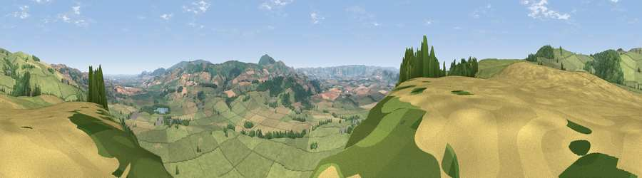

Viewpoint near Marton
#13074 in England · top 43% of its area beats it · near Marton · access?Where it is
The exact computed spot (SJ 27175 02725). Click the marker for map links.
Public access: no public right of way or access land is recorded at this exact spot — it may be on private land. Computed from Natural England's CRoW access layer and OpenStreetMap rights of way — not the legal definitive map. Always verify locally.
The view, rendered

A 360° render of this exact spot computed from the terrain model, tree cover and land cover — summer colours, afternoon light, calibrated against photographs of famous viewpoints. Real trees, hedges and buildings will differ in detail.
The panorama
Grey silhouette: terrain skyline in each direction (720 bearings, Earth curvature and refraction included). Dashed green: skyline with trees (+15 m) and buildings (+8 m) as obstacles. Blue strip: how far the ground is visible on each bearing.
Where the view opens
Wedge length = distance to the farthest visible ground on that bearing (vegetation-aware). Rings at 10, 25 and 50 km.
What fills the view
71% grassland · 15% woodland · 12% cropland ·
Angular shares of the visible panorama (visual magnitude), not map area. Landscape diversity 0.36 (0–1 Shannon).
Key numbers
More beautiful places nearby
The staircase of upgrades: each row has a higher view potential than everything closer. Driving times are estimates from straight-line distance, calibrated against real road routing — check an actual route before setting out.
| Place | Direction | Drive | Score |
|---|---|---|---|
| Viewpoint near Marton | SW · 1 km | ~2 min | 65.8 |
| Viewpoint near Marton | N · 2 km | ~6 min | 71.9 |
| Bromlow Callow | ESE · 5 km | ~12 min | 76.8 |
| Viewpoint near Vennington | NNE · 8 km | ~16 min | 80.8 |
| Viewpoint near Stiperstones | E · 11 km | ~21 min | 82.0 |
| Viewpoint near Halfway House | NNE · 11 km | ~21 min | 83.3 |
| The Lawley | ESE · 23 km | ~38 min | 85.8 |
| Viewpoint near Little Wenlock | E · 36 km | ~54 min | 86.6 |
52.61739, -3.07709 · source: screening · position refined by local search. Computed location — check access rights before visiting.